NBL — NB-Architekt


NBL — NB-Akademie


F37 — Caslon
F37 Caslon is a love letter to one of the great British fonts. Does the world really need another cut of Caslon? We think so. F37 Caslon is our personal take on a stone-cold classic. Originally designed by William Caslon in 1726, this old-style serif has fascinated typographers ever since. Over the years, the font has been tweaked, reworked, modernised, pulled, stretched, squashed asd embellished, as successive generations have created their own versions of Caslon, particular to their times and tastes. We’ve taken the best of these seminal Caslon revisions to create our own ‘super family’ in a huge range of weights and styles. Our cut features a tall x-height, old-style numerals, capital italic swashes, ligatures, discretionary ligatures and upright italic alternates. Elegant and extensive, F37 Caslon is a truly versatile typeface family suitable from posters and headlines to body copy and captions. Caslon was the font that first turned us on to typography. It’s taken years of chipping away… and now finally, our homage is complete.
Designed by William Caslon I circa 1722. William Caslon I (1692/1693 – 23 January 1766), also known as William Caslon the Elder, was an English typefounder. The distinction and legibility of his type secured him the patronage of the leading printers of the day in England and on the continent. Caslon was born in Cradley, Worcestershire in 1692 or 1693 and trained as an engraver in nearby Birmingham. In 1716, he started business in London as an engraver of gun locks and barrels and as a bookbinder's tool cutter.
 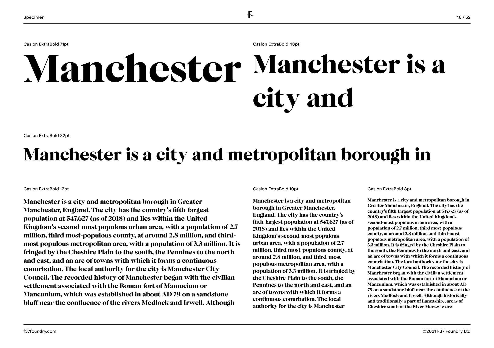
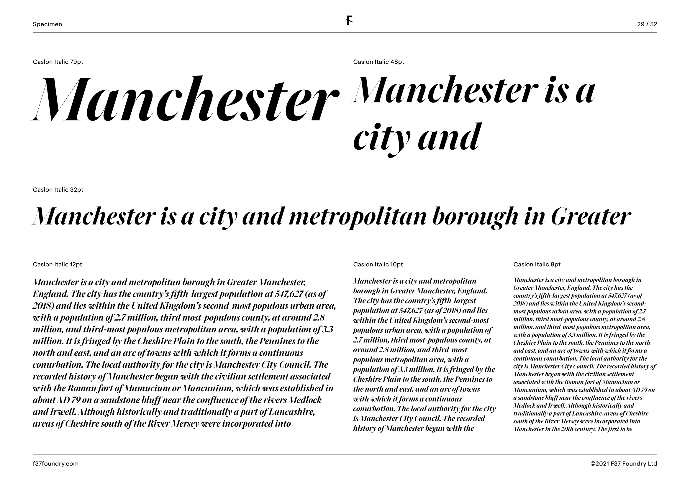
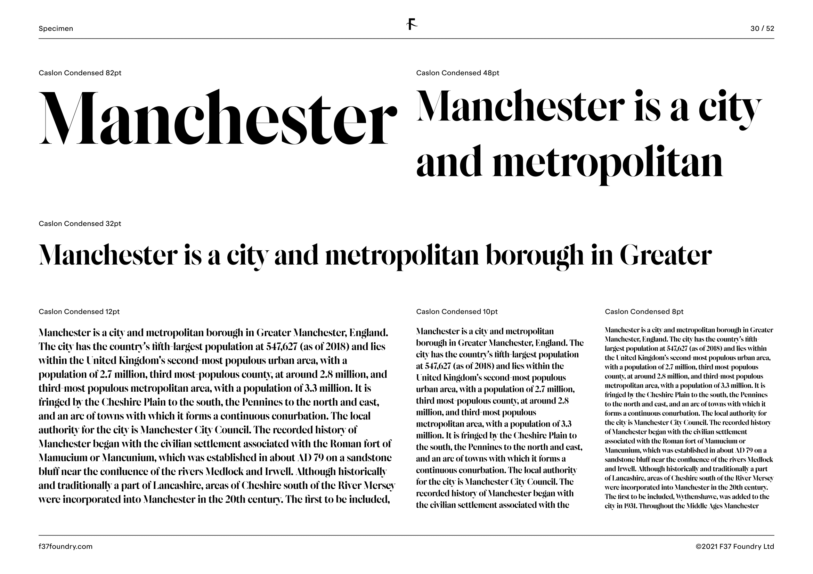
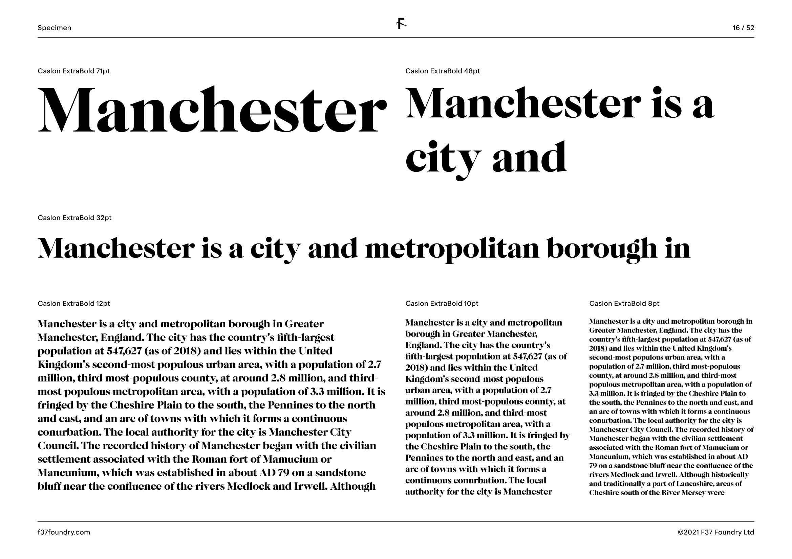
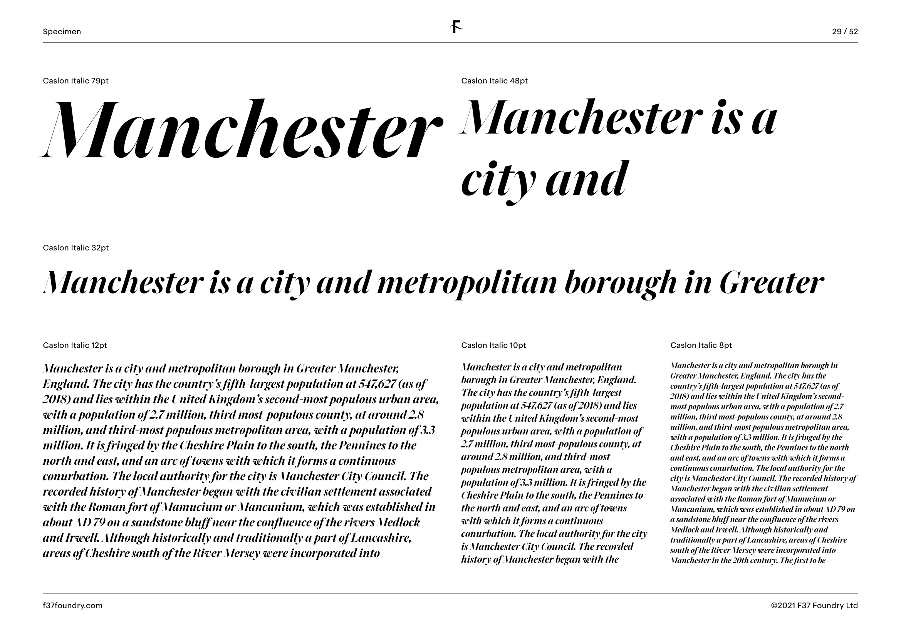
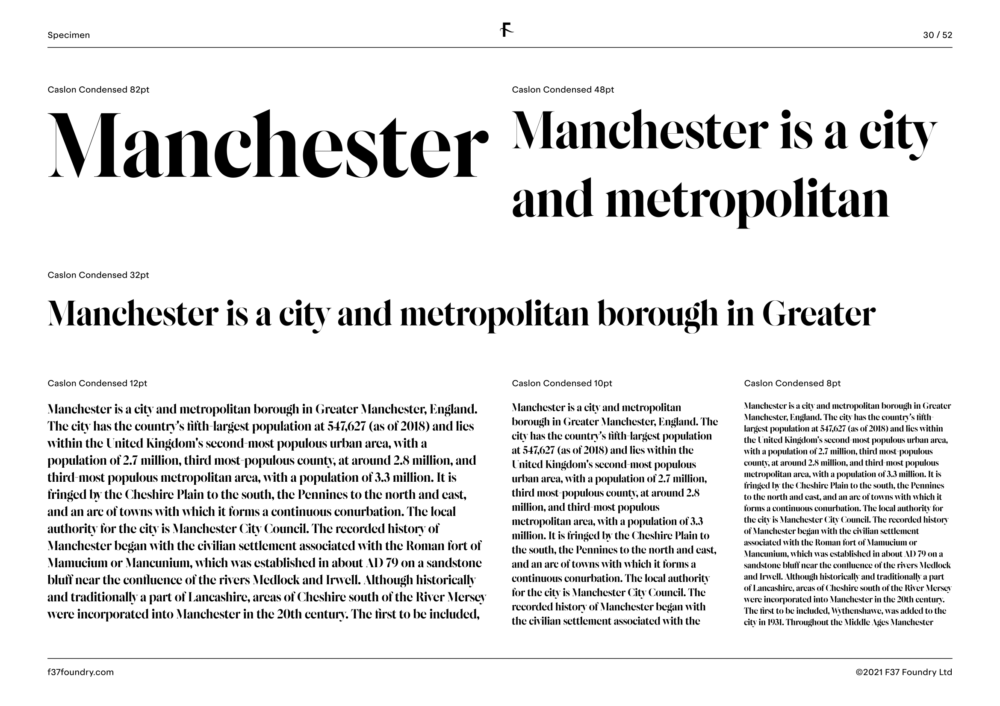

 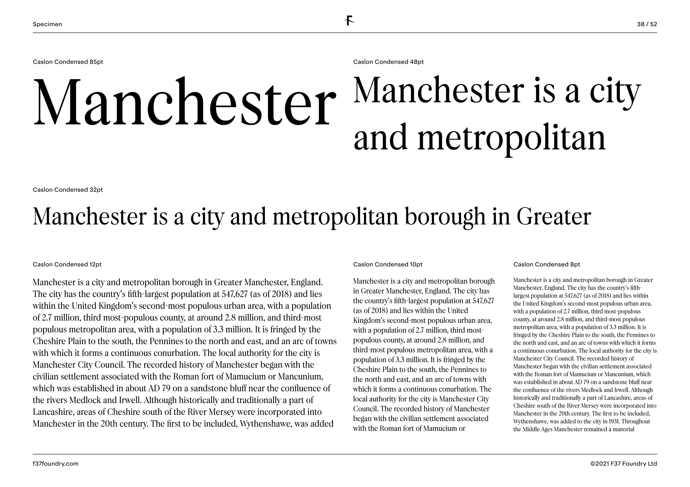
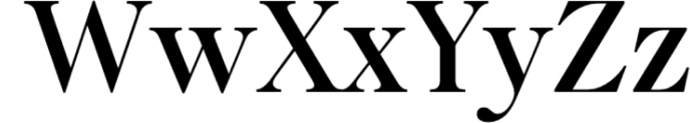
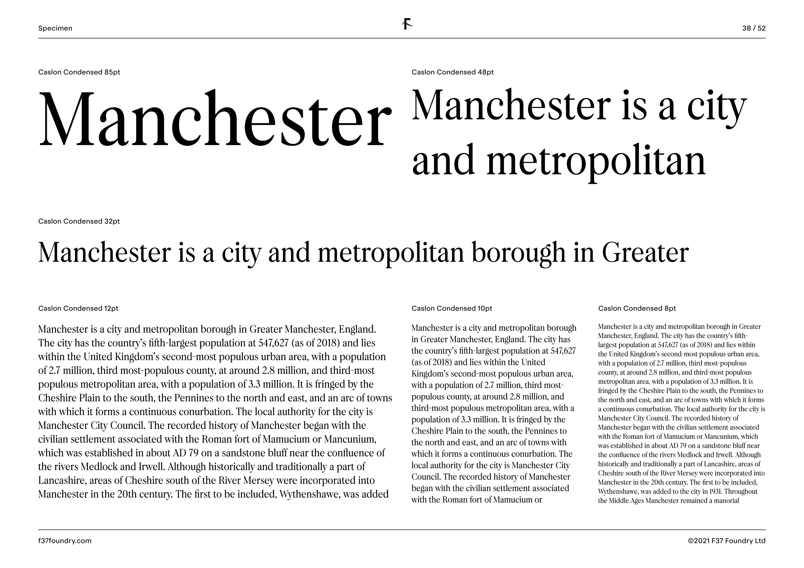
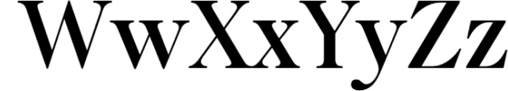
Schick Toikka — Noe-Display
What makes Noe unique is the audacious way its strokes end. Large, wedge-shaped serifs come to a sharp point. Arches are capped with prominent beaks. Historically, such triangular serifs are associated with the ‘Latin’ genre. Also known in German as ‘Etienne’ or ‘Renaissance’, this genre first blossomed in the 1880s. It shares the formal attributes of older rational romans, including a vertical stress axis and a strong contrast between thicks and thins, but is distinguished by said tapered serifs. Noe adopts these characteristics and remodels them for the 21st century, as exemplified by the large lowercase. The acute triangular terminals add a certain fierceness to the usual elegance of high-contrast serif type, without detracting from its poise and finesse. Slow, round curves enter into a seamless dialog with brisk, spiky terminals. The italic is especially fluid, with a blatantly cursive construction and long, tapering entry and exit strokes. Noe comes in three subfamilies, each of which is optimized for a specific range of sizes. Noe Display is unapologetically expressive. When letters are large, there is room for them to wave their own peculiar flag, to project their personal voice at full volume. Noe Display speaks with clarity and confidence, but the point isn’t simply to shout. Its strong will is tempered by a graceful discipline. This is distinguished display type with sparkle and bite. Noe Text was developed as a text companion that functions in body copy. It adds heft to the hairlines, and blunts the corners just enough to keep the details visible at reduced sizes while maintaining the crisp character of the family overall. Its proportions are broader, too, with counters that are more open, enabling smaller type and longer passages of copy. Noe Standard sits between Display and Text. It’s intended for middle sizes where the Display would be too delicate and the Text too rugged. Noe Standard is perfect for subheads, intros, pull quotes, as well as for big sizes on screen. Noe’s three subfamilies naturally pair well each other, as well as they play on their own. Each comes in a range of weights plus italics and includes a Latin Extended character set, supporting virtually every language of Western and Central Europe.

CoType-RM-Neue
RM Neue takes inspiration from utilitarian neo-grotesques, and positions itself as a timeless and versatile addition to any designer’s toolkit. Its compact proportions and low-contrast design create a familiar aesthetic that feels approachable without the sterility often associated with grotesque typefaces. Available in five weights – Light, Regular, SemiBold, Bold, and Black – each with matching oblique italics, RM Neue supports an extensive range of languages via its Latin Extended A unicode set. RM Neue’s slightly heavier Regular weight delivers greater impact at larger text sizes (12–16 points), making it ideal for modern websites, zines, and other minimal layouts. For even greater control, variable font technology enables precise fine-tuning, giving users seamless access to any weight or style they need. The ascenders in RM Neue match the height of the capitals, prompting the addition of a curly serif to the default ‘l’ for better distinction from the capital ‘I.’ OpenType features provide access to an alternate single-storey ‘a,’ a simple ‘l’ without the serif, and an alternate ‘R,’ offering additional flexibility. Striking at display sizes and highly legible in text, RM Neue is a workhorse sans-serif that combines distinctive personality with professional functionality. Originally introduced as RM in 2011 and refined as RM Pro in 2016, RM Neue represents a complete redesign and expansion of its predecessors. With more weights and enhanced versatility, it offers a fresh take on a proven classic.

Calderon
Calderón is a colombian based creative studio focused on type design. Our work encompasses custom and retail typefaces, lettering for brands and graphic design for all editorial purposes.
Calderon — RT-Singular
RT Singular is a Sans-serif with human touch based on Renaissance inscriptions. It was designed in orden to be use specially in health, beauty and scientific brands. The version 1.0 of RT Singular includes a Regular style with the following specifications. - Available as a suite of OpenType® features, as ligatures and alternate characters - A character set supporting most Central European and many Eastern European languages - German capital sharp S. Designers: Felipe Calderón, Ritmo Estudio. Publisher: Estudio Calderon. Foundry: Estudio Calderon. Design Owner: Estudio Calderon. MyFonts debut: Dec 19, 2020. Inscribed lapidary typeface RT Singular.


Commercial-Type — Graphik
Graphik was inspired by the appealing plainness seen in many of the less common 20th century European sans serifs and in the hand-lettering of classic Swiss Modern posters. The lighter weights were influenced by the less popular sans serifs that many European foundries released to compete with Futura, Helvetica and Univers, the juggernauts of 20th century sans serifs. These influences included Neuzeit Grotesk, Folio, Recta, and Maxima. The heavy end of the family is inspired in part by Paul Renner's Plak, a relatively obscure display typeface cut only in large sizes. First drawn as the house style for Schwartzco Inc., it was further developed for Condé Nast Portfolio and later for Wallpaper* and T, the New York Times Style Magazine. The low contrast and large x-height give the typeface great versatility. It is suitable for display purposes as well as for text sizes, captions and for such specific tasks as navigation systems and map-making. By the way, the web-site of type.today is set in Graphik. The typeface is available in nine weights, with italics, each with five sets of figures. The Cyrillic extension was drawn by Ilya Ruderman (CST Fonts) in 2015

Commercial-Type — Canela
Canela is a graceful display typeface that defies many of the traditional classifications. Designed by Miguel Reyes, its forms are in an ambiguous space between sans and serif, both soft and sharp, modern yet with roots in the classical. Canela began as an interpretation of Caslon, but Reyes gradually took the family in a new and unexpected direction, shedding its serifs and leaving only vestigial flaring at the ends of strokes, taking on a monumental quality influenced by his experience with stonecarving. Canela debuted in issue 5 of fashion and art magazine Document Journal, where its sober elegance complemented a melancholic moment in fashion. Delicate in its lightest form, with its gently flared strokes, as the weight increases to the blackest weights it takes on entirely different feeling of warmth with a quiet confidence.

 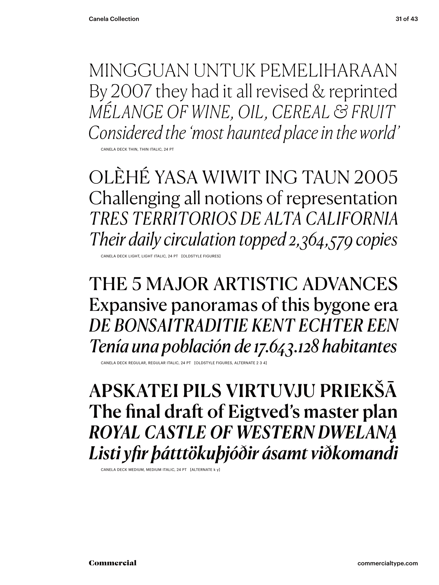
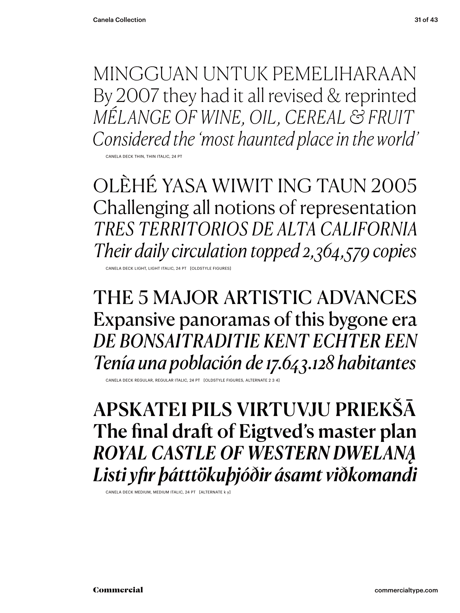
Letters-From-Sweden-Eksell-Display
Eksell Display is a unique typeface from 1962, designed by the legendary swedish designer Olle Eksell (1918 2007). Olle was a prolific artist who couldn't resist sketching out whatever ideas came to mind. His work covered a broad range, this being one of merely two complete typefaces. The letters were drawn in Olle's five square meter studio in Stockholm, six years after he designed the classic Mazetti eyes. We carefully digitized the letters and developed a family of four optical styles, including a stencil version. Have fun with it, we think Olle did. Year 2015 Designed by Olle Eksell Göran Söderström Krista Radoeva (Cyrillic) George Triantafyllakos (Greek) Script(s) Latin Cyrillic Greek
Carter&Cone — Miller Text
Miller Text, designed by Matthew Carter, epitomizes a reliable and attractive text font. Its utility and grace are apparent onscreen or in an off-the-rack fashion magazine. The Miller family of typefaces is a reinvigoration of the 19th-century Scotch Roman. This series was a team effort, with Richard Lipton, Jill Pichotta, Tobias Frere-Jones, and Cyrus Highsmith contributing at different stages. Carter & Cone's Miller Text is available in Roman, Semi Bold, and Bold with companion Italics.


A2 — Antwerp
Antwerp is inspired by typefaces from the sixteenth century and more directly by the collection of type specimens held in the archive at the Plantin-Moretus Museum in Antwerp, Belgium. Antwerp is an elegant, versatile text face inspired by the past but designed for use in today's newspapers, books, and magazines.
A2 — English-1776
English 1766 is a new font with 20 styles inspired by the quintessentially British font, Caslon. English 1766 was created following a period of intensive research, including the examination of historical type specimen pages printed with Caslon foundry type in multiple sizes and conditions, as well as the study of more recent digital revivals. English 1766 is not a historical revival of Caslon but rather a contemporary interpretation of a classic design.
 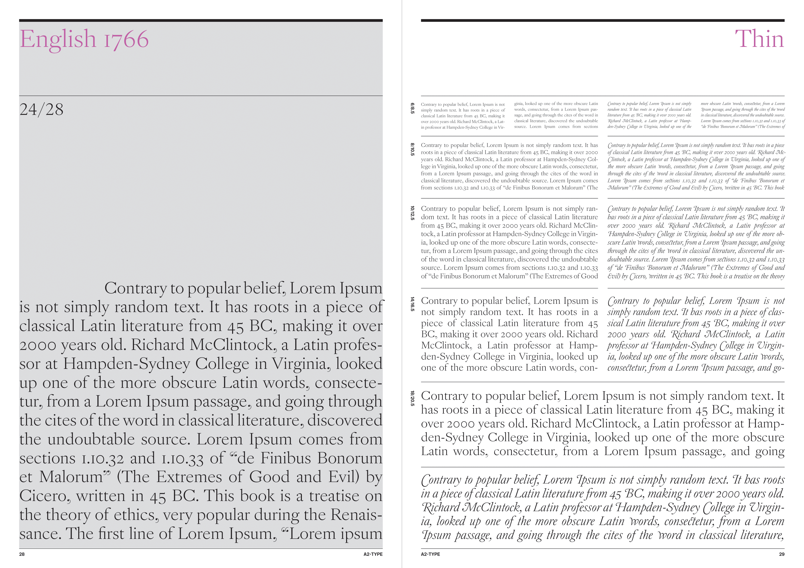
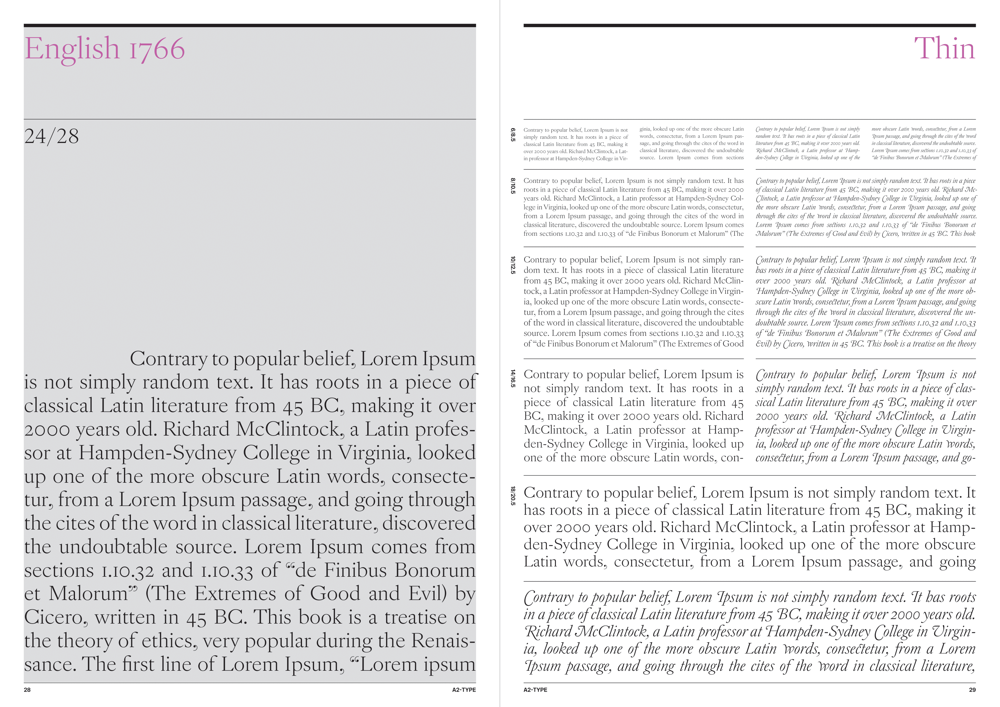


ILOTT-TYPE
ILOTT-TYPE is an independent New York City based boutique crafting a library of explorative and meticulously detailed contemporary designs. Each unique font is made with the highest degree of creative and technical quality and include international character sets and diacritics in styles suitable for setting display and text. ILOTT-TYPE is the sister company of ILOTT Vintage-the stylish resource synonymous with analogue photography-founded by British designer Andrew Bellamy in 2010.
ILOTT-TYPE — 19-PRA
- Designers: Andrew Bellamy
- Publisher: ILOTT-TYPE
- Foundry: ILOTT-TYPE
- Design Owner: ILOTT-TYPE
- 2018
Inspired by the elegance of Herman Zapf's designs crossed with the readability of early 20th century Gothic fonts by Morris Fuller Benton, 19-PRA is a sans-serif with a visible stroke contrast and a humanist tone of voice. The large x-height seen in fonts like News Gothic and Palatino increases legibility and condensed proportions give excellent readability making it perfect for newspaper and magazine publishing. A typeface that can serve for both body text and titling the uppercase excels for headlines and renders beautiful brand names when tracked out. It sets well with both a serif or sans serif and has various open type features including: 12 standard ligatures, 3 discretionary ligatures, tabular figures, old stye figures as well as European accents.
Dinamo — Diatype


TDF — Wulkan-Display

 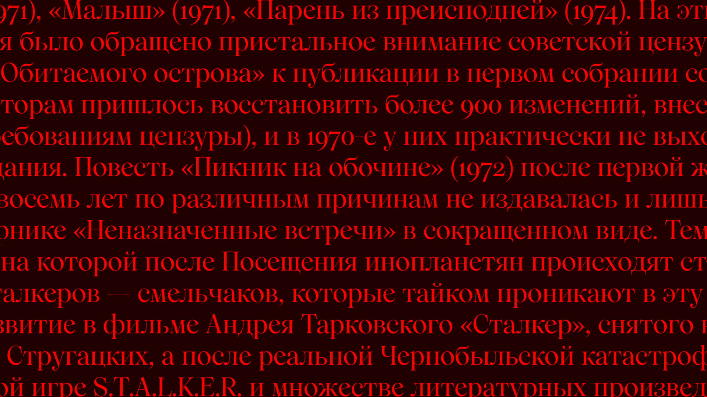
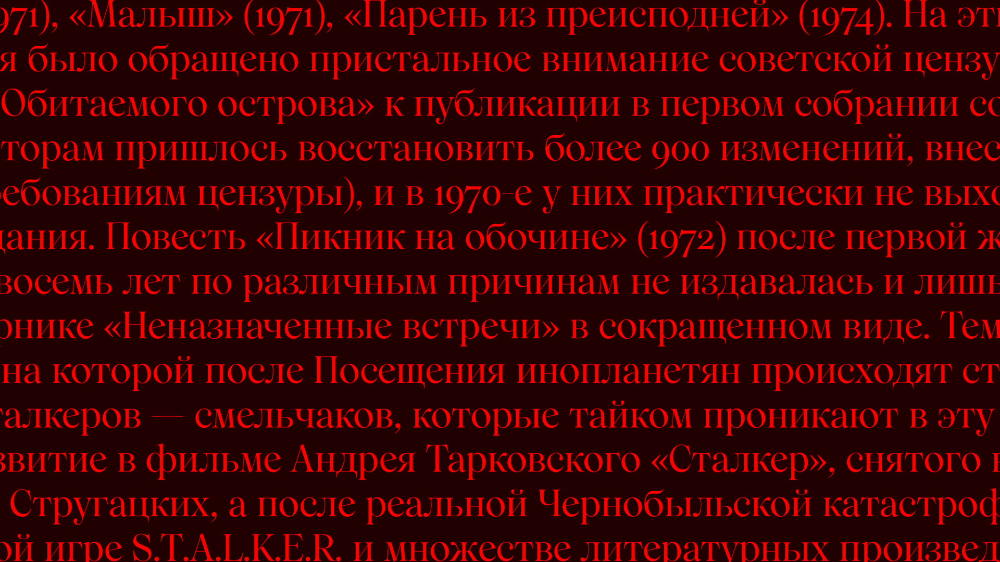


Monotype — Albertus
Berthold Wolpe created the Albertus typeface before he joined Faber & Faber, but the typeface is inextricably linked to Faber’s design heritage.
The North Ship by Philip Larkin, The Flame by Leonard Cohen, One Hundred Lyrics and a Poem by Neil Tennant, The Hawk in the Rain by Ted Hughes, American Histories by John Edgar Wideman, Come Rain or Come Shine by Kazuo Ishiguro, The End of the Affair by Graham Greene, Lord of the Flies by William Golding, How to be Invisible by Kate Bush, The Violet Hour by Katie Roiphe, The Entertainer by John Osborne, Preoccupations by Seamus Heaney, May Week Was in June by Clive James, Grief is the Thing with Feathers by Max Porter, Mother, Brother, Lover by Jarvis Cocker, Paradise by Edna O’Brien, Mostly Hero by Anna Burns, My Son the Fanatic by Hanif Kureishi, Wrote for Luck by Shaun Ryder, For the Union Dead by Robert Lowell, Music, Sense and Nonsense by Alfred Brendel, Paris Echo by Sebastian Faulks, The Silence of the Girls by Pat Barker, Collected Poems 1909–1935 by T. S. Eliot, Pearl by Simon Armitage, Mr Salary by Sally Rooney. All in Albertus. That’s just the top row. The majority of these books were published by Faber; the ones that weren’t just look as though they were, or wanted to be.Simon Garfield
Albertus launched commercially in 1935. Wolpe, a German Jewish designer who had fled the Nazi regime, had settled in London and came to work at Faber during the War: ‘Wolpe joined Faber eighty years ago in 1941, at the tail-end of the Blitz, and one of his first roles involved fire-watching from the roof of the Russell Square office.’ ‘In his four decades at Faber, he designed more than 1,500 book jackets, some with hand-torn or handwritten lettering, some with his typefaces Hyperion, Pegasus, Fanfare and Tempest Titling, and many, many more in Albertus. If ever Faber had a house style, this was it. Every letter is a meal in itself, a clear message even before one reads what it has to say. It embodies something steadfastly human, and – despite its origins – specifically handmade in Britain. It engenders old-fashioned, characterful trust.’ ‘‘Modern yet old fashioned, stiffly formal yet faintly eccentric, folkloric yet empirical. Often it can embody two seemingly opposing qualities at once.’’ Jonathan Pelham Senior Designer Albertus at work As Simon Garfield points out, Berthold Wolpe was, like his typeface, quite a character: ‘Wolpe was pleasingly shocking too. Determinedly shambolic, it was unusual for him to appear in the office until 4 p.m., spending the mornings trawling London’s skips and bookshops for treasures (and days when he did make it in just before lunch, he would then go for lunch). He wore a trilby and a Sherlock-style cape, and he played the eccentric to the nines. A photo taken in his office in the 1970s shows him holding a pipe, a long flick of hair over his balding pate, a wistful stare and a room full of detritus and crap.’ Moving to the present day, Garfield spoke to three of Faber’s current design team about designing with Albertus: ‘Today at Faber, designer Peter Adlington welcomes the “confounding ability” of Albertus to apply itself to so much so well. “It can appear whimsical, definitive, literary, threatening, quiet . . .” His fellow designer Jonathan Pelham notes other diverse identities: “Modern yet old fashioned, stiffly formal yet faintly eccentric, folkloric yet empirical. Often it can embody two seemingly opposing qualities at once. It can be used to communicate a huge range of messages, but unlike the expressly universalist modernism of Helvetica or Univers, it doesn’t flatten the effect behind the message in the process.”’ Faber brand Over thirty years on from Berthold Wolpe’s death in 1989, the impact of his work still grows: ‘Last year, another of Wolpe’s typefaces, Pegasus, a similarly bold alphabet with a hand-cut feel, was adopted for Faber’s new branding, while the popularity of Albertus shows no sign of waning. In 2017, Toshi Omagari of Monotype Studio released Albertus Nova, a digital update in five weights, light, thin, regular, bold and black; the whole family available for download on any machine for £85. The face continues to illuminate the jackets of new publications almost every week, most recently the novels A Burning by Megha Majumdar and This One Sky Day by Leone Ross, the poetry collection A Blood Condition by Kayo Chingonyi, the Graham Greene biography Russian Roulette by Richard Greene and the memoir Heavy Light by Horatio Clare.’ ‘Donna Payne, Faber’s Creative Director, remembers that when she joined the company fifteen years ago Albertus “almost had its own office”. “It’s incredibly hard to make it look bad,” she says. “It even looks good on a phone, it just lends a literary quality to everything. The only problem is that it can make a designer lazy; the familiarity means you have to work harder to create something innovative. I’ve tried to deconstruct it, but no matter what you do with it, even with horrible spacing, it always manages to look beautiful. There’s just something magical about it.”’ Click here to read the full article on the Esquire website. For more articles going behind the scenes with Faber’s designers, type ‘Cover Design’ into the Search bar, above.


Dinamo — Whyte


Dinamo — Whyte-Inktrap


Dinamo — Arizona-Flare

Dinamo — Arizona-Sans

 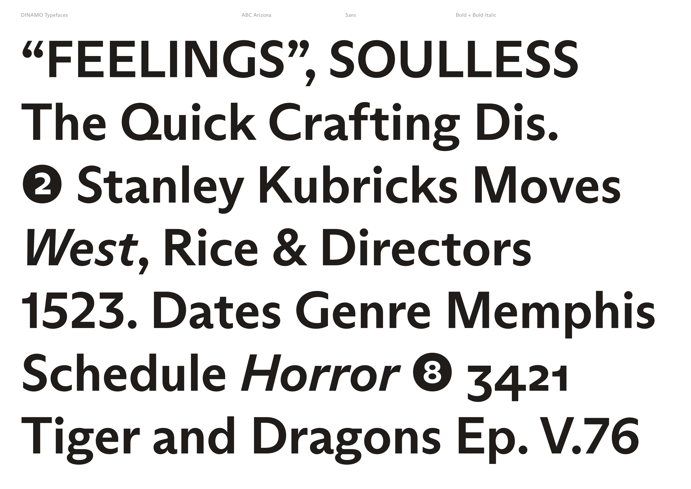
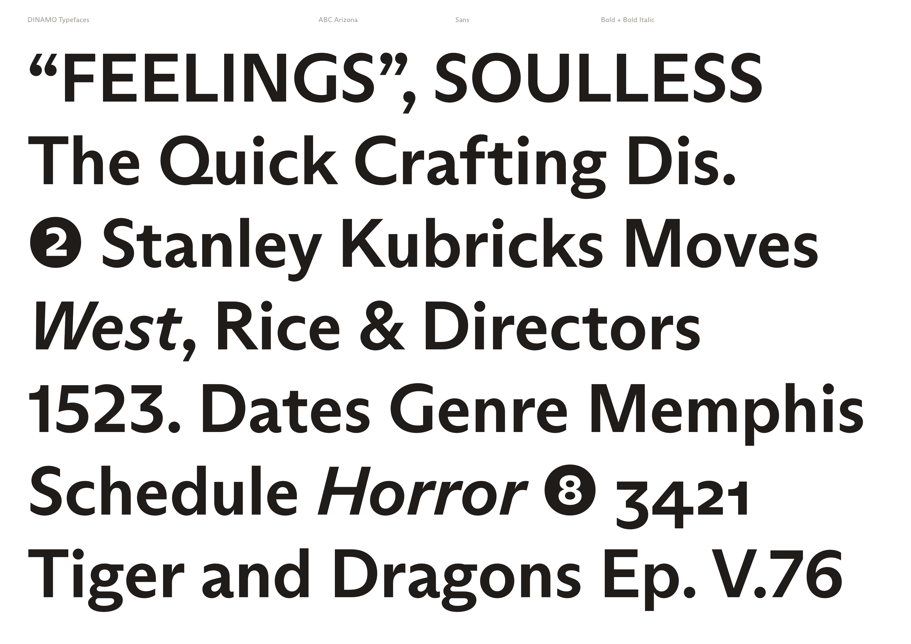
Klim — American-Grotesk


 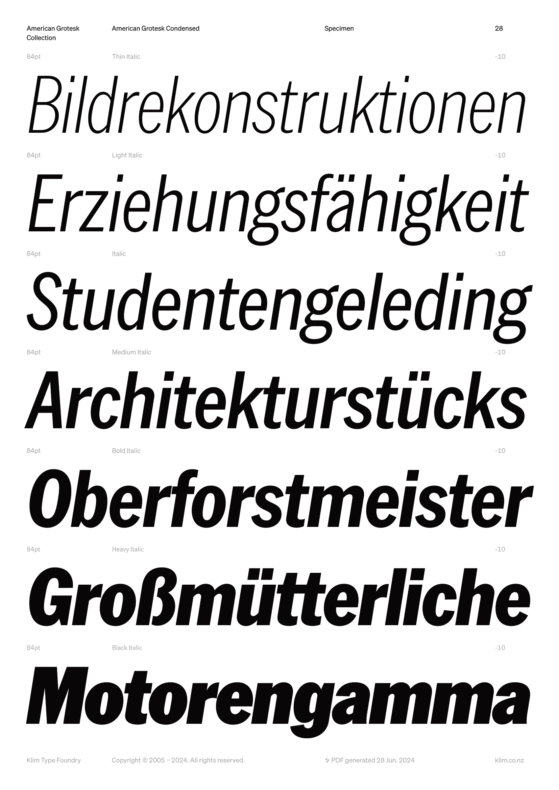
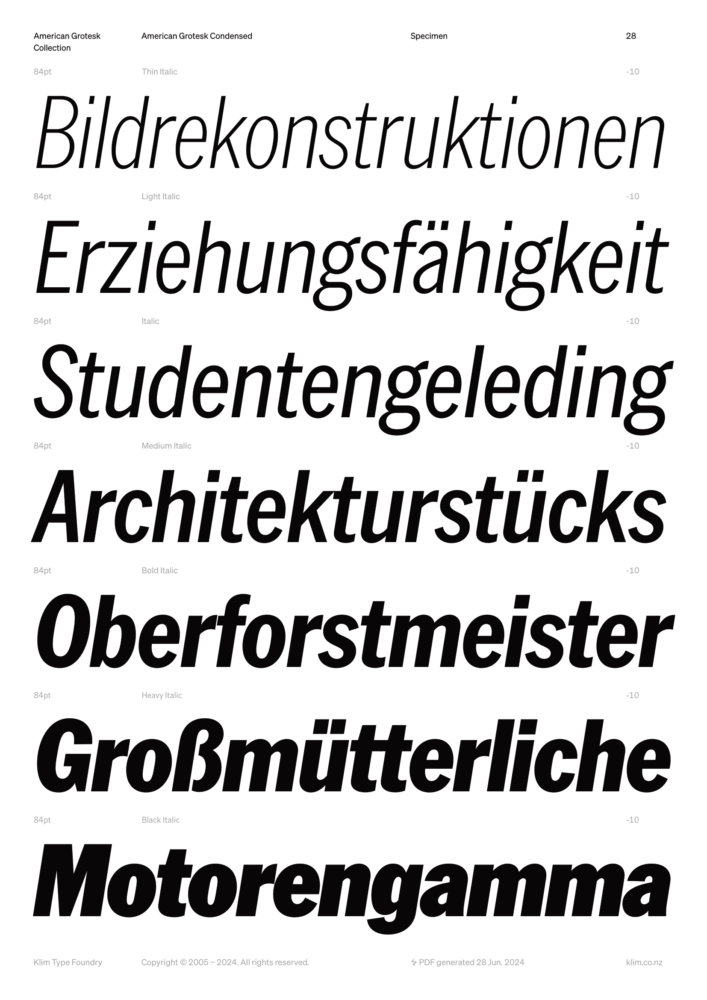


 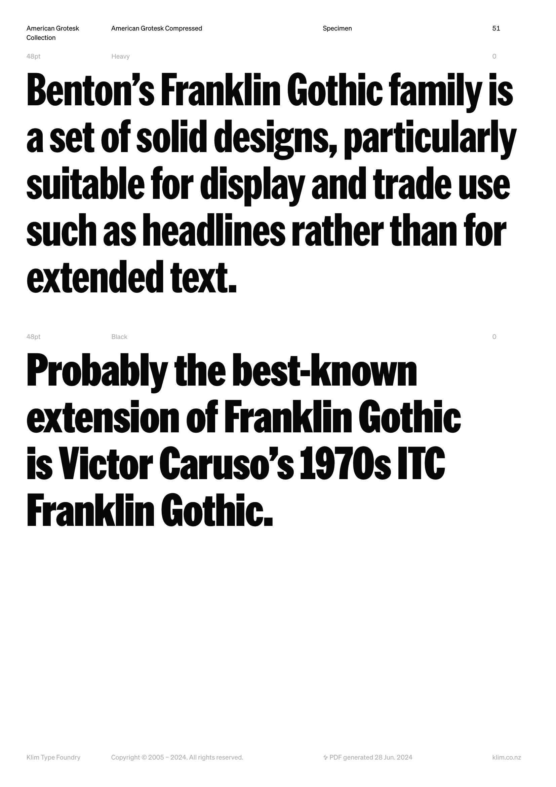
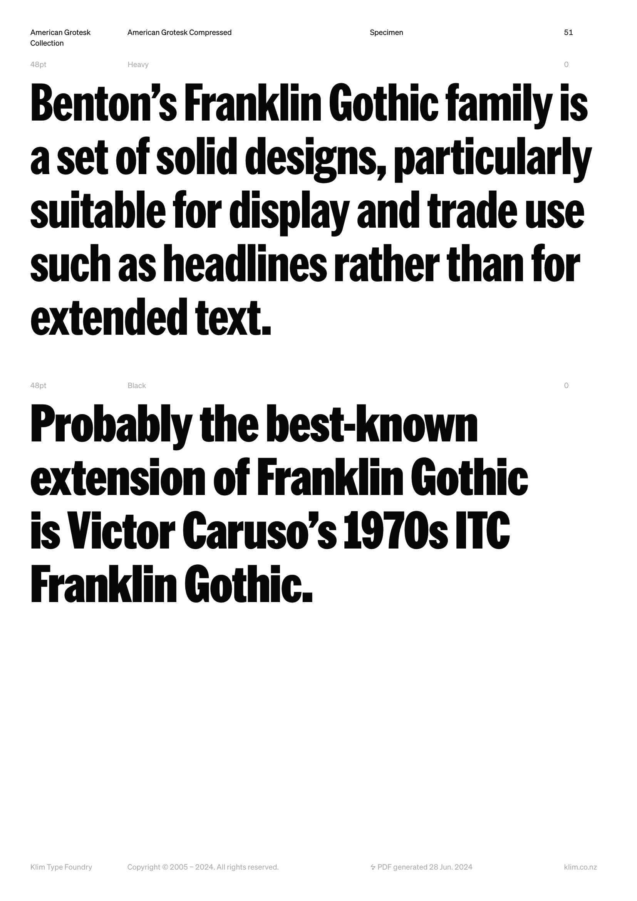